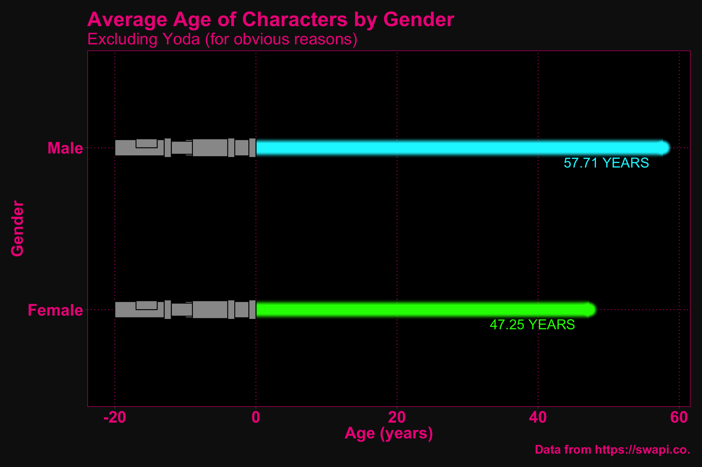

2 The People
2.1 The Data
# load and format data
people <- data.frame(t(list.cbind(sw_people))) %>%
# convert the star wars people dataframe to a tibble
as_tibble() %>%
# select only the columns between name and gender (inclusive)
select(name:gender) %>%
# mutates columns that are lists to non-lists
mutate_if(is.list, ~(unlist(.))) %>%
# mutate all columns and replaces the text "unknown" with "NA"
mutate_all(~(na_if(., "unknown"))) %>%
# converts height and mass to numeric variables
mutate_at(vars(height, mass), ~(as.numeric(.))) %>%
# extracts birth year and converts it to numeric; replace "n/a" values with
# droid for hair_color and gender
mutate(birth_year = parse_number(as.character(birth_year)),
hair_color = if_else(gender == "n/a", "droid", hair_color),
gender = if_else(gender == "n/a", "droid", gender))
# look at first ten rows of tidied dataet
head(people, n = 10L)## # A tibble: 10 x 8
## name height mass hair_color skin_color eye_color birth_year gender
## <chr> <dbl> <dbl> <chr> <chr> <chr> <dbl> <chr>
## 1 Luke Sky… 172 77 blond fair blue 19 male
## 2 C-3PO 167 75 droid gold yellow 112 droid
## 3 R2-D2 96 32 droid white, bl… red 33 droid
## 4 Darth Va… 202 136 none white yellow 41.9 male
## 5 Leia Org… 150 49 brown light brown 19 female
## 6 Owen Lars 178 120 brown, gr… light blue 52 male
## 7 Beru Whi… 165 75 brown light blue 47 female
## 8 R5-D4 97 32 droid white, red red NA droid
## 9 Biggs Da… 183 84 black light brown 24 male
## 10 Obi-Wan … 182 77 auburn, w… fair blue-gray 57 male2.2 The Visualization
# people plot
people %>%
# filter for only females and males and drop the outlier (yoda)
filter(gender == "female" | gender == "male",
name != "Yoda") %>%
# group by gender
group_by(gender) %>%
# calculate mean age and rounded mean age for geom_text
summarise(m_age = mean(birth_year, na.rm = TRUE),
m_age_r = round(m_age, 2),
m_age_r = paste(m_age_r, "YEARS")) %>%
# convert genders to title case and gender to a factor
mutate(gender = str_to_title(gender),
gender = as.factor(gender)) %>%
# plot gender vs age and fill by gender
ggplot(aes(x = gender, y = m_age, fill = gender)) +
# add the lightsaber blades to the plot
geom_saberblade() +
# add the lightsaber hilts to the plot
geom_saberhilt(column = 1) +
geom_saberhilt(column = 2) +
# set colour and fill values (i.e., red and green)
scale_fill_manual(values = c("#0FFF00", "#00f6ff")) +
scale_colour_manual(values = c("#0FFF00", "#00f6ff")) +
# add text with the mean ages to the plot
geom_text(aes(label = m_age_r, color = gender),
size = 6,
position = position_nudge(x = -.09, y = -8)) +
# add labels
labs(title = "Average Age of Characters by Gender",
subtitle = "Excluding Yoda (for obvious reasons)",
y = "Age (years)",
x = "Gender",
legend = "Gender",
caption = "Data from https://swapi.co.") +
# customize using my theme
my_theme() +
# flip the coordinates
coord_flip()
2.2.0.1 Idea
Although not a great data/ink ratio, I believe the above figure would be memorable in displaying the ages of the characters in Star Wars. I would like to add more design elements to the plot (e.g., a more detailed lightsaber hilt, a glow on top of the saber). It think it would also be informative to add some text labels showing the actual ages of characters beside the bars. Yoda is also an outlier, so it may be appropriate to eliminate him from the plot.
2.2.0.2 Intended Audience
The intended audience for this visualization are fans of Star Wars and the general public.
2.2.0.3 Intended Message
Other than wanting to convey the average difference in ages among genders in the Star Wars universe, I think it is important to consider that the mean age of the female characters is so young compared to that of the male characters. It seems the recent movies have taken both incidental (e.g., Carrier Fisher) and deliberate (e.g., Laura Dern) steps to include older women. Star Wars would certainly benefit from being more inclusive when it comes to casting.